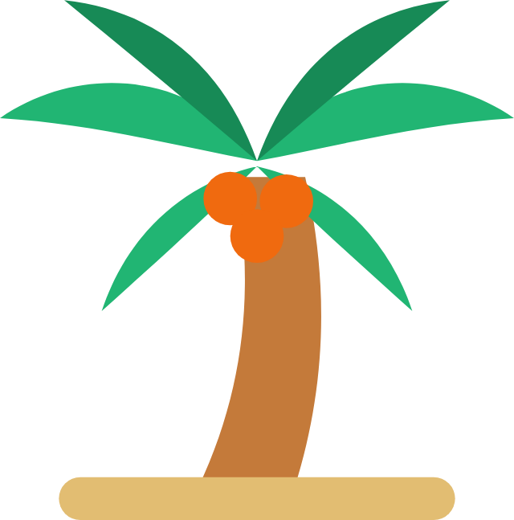
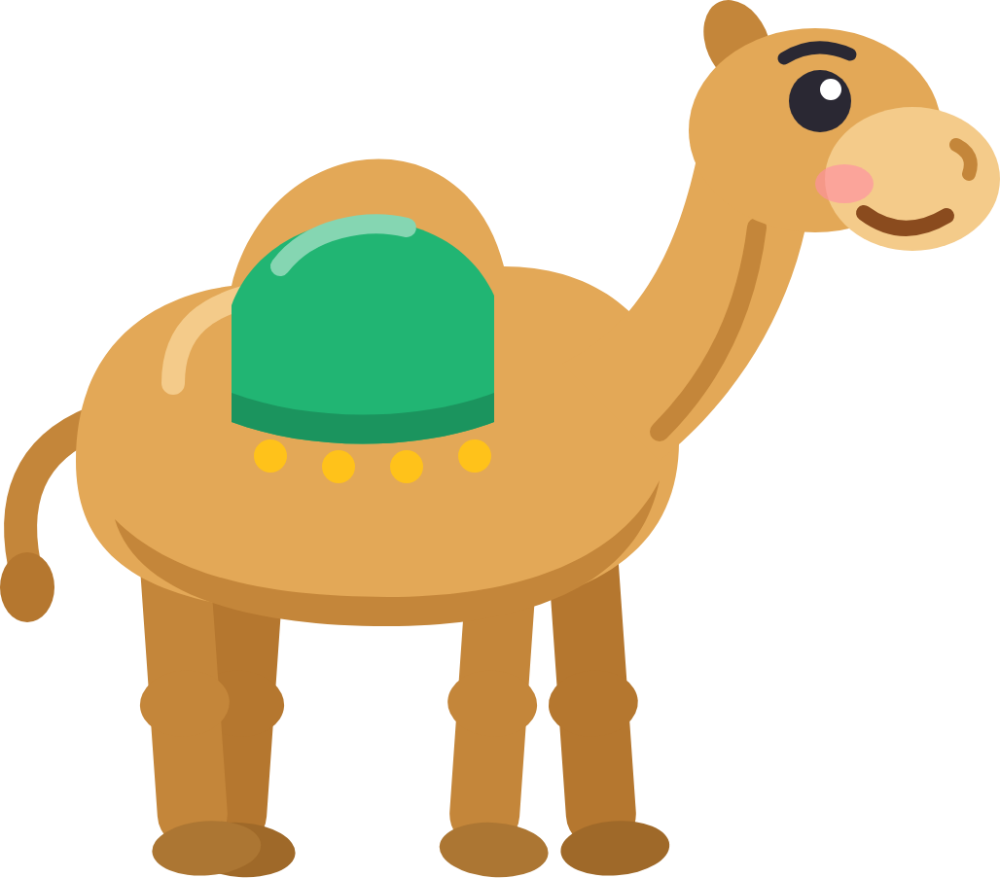
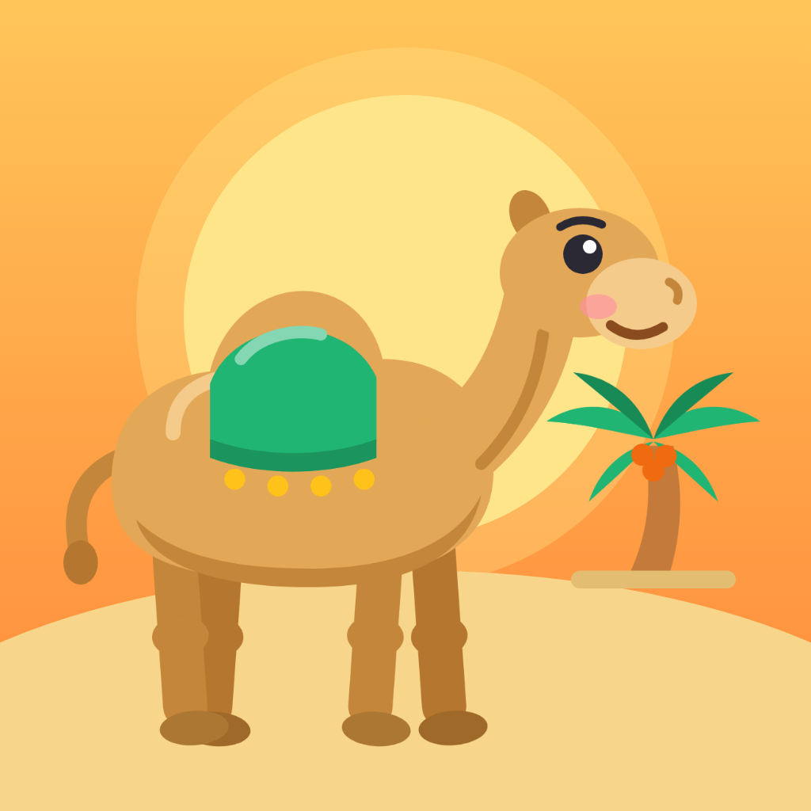

<!doctype html><html><head><meta charset="utf-8"><style>
/* The app cover: a camel on a desert dune at sunset. scripts/app-cover.mjs renders each part with ?part=...
   The camel and palm are the app's own drawings (src/ui/Camel.tsx, the "palm" icon in src/ui/Icon.tsx), rendered once to PNG. */
@font-face{font-family:Baloo;src:url(../../../node_modules/@expo-google-fonts/baloo-bhaijaan-2/800ExtraBold/BalooBhaijaan2_800ExtraBold.ttf)}
@font-face{font-family:Nun;src:url(../../../node_modules/@expo-google-fonts/nunito/800ExtraBold/Nunito_800ExtraBold.ttf)}
*{margin:0;box-sizing:border-box}
html,body{background:transparent;overflow:hidden}
.box{position:absolute;left:0;top:0;width:1024px;height:1024px;overflow:hidden}
.sky{background:linear-gradient(180deg,#FFC65A 0%,#FF9F45 60%,#FF8A3D 100%)}
.sun{position:absolute;border-radius:50%;background:#FFE58A}
.dune{position:absolute;border-radius:50%;background:#F7D58A}
img{position:absolute}
/* Feature graphic */
.fg{position:absolute;left:0;top:0;width:1024px;height:500px;overflow:hidden}
.txt{position:absolute;left:60px;top:0;bottom:0;width:540px;display:flex;flex-direction:column;justify-content:center}
.brand{display:flex;align-items:center;gap:22px}
.mini{position:relative;width:116px;height:116px;border-radius:28px;overflow:hidden;border:4px solid rgba(255,255,255,.9);box-shadow:0 10px 28px rgba(0,0,0,.25)}
.mini img{position:static;width:100%;height:100%}
h1{color:#fff;font:84px Baloo;line-height:1;text-shadow:0 4px 0 rgba(0,0,0,.12)}
p{color:#fff;font:38px Nun;line-height:1.15;margin-top:22px}
.chips{display:flex;flex-wrap:wrap;gap:10px;margin-top:22px}
.chip{background:rgba(255,255,255,.2);border:2px solid rgba(255,255,255,.35);color:#fff;font:19px Nun;padding:7px 15px;border-radius:999px}
</style></head><body><script>
// Scene in a 1024 box; s scales it about the center (Android keeps only the middle of an adaptive icon).
const at = (s, v) => 512 + (v - 512) * s;
const sun = (s) => `<div class="sun" style="width:${560*s}px;height:${560*s}px;left:${at(s,232)}px;top:${at(s,120)}px;box-shadow:0 0 0 ${60*s}px rgba(255,229,138,.35)"></div>`;
const dune = (s) => `<div class="dune" style="left:-200px;right:-200px;height:600px;top:${at(s,720)}px"></div>`;
const figures = (s) => `
  `;
const part = new URLSearchParams(location.search).get("part") || "icon";
let html = "";
if (part === "icon") html = `<div class="box sky">${sun(1)}${dune(1)}${figures(1)}</div>`;
if (part === "adaptive-bg") html = `<div class="box sky">${sun(0.62)}${dune(0.62)}</div>`;
if (part === "adaptive-fg") html = `<div class="box">${figures(0.62)}</div>`;
// Splash: the icon as a rounded tile in the middle; the rest stays clear over the splash color.
if (part === "splash") html = `<div class="box"><div class="box sky" style="width:600px;height:600px;left:212px;top:212px;border-radius:132px">
  <div class="box" style="transform:scale(${600/1024});transform-origin:0 0">${sun(1)}${dune(1)}${figures(1)}</div></div></div>`;
if (part === "feature") html = `<div class="fg sky">
  <div class="sun" style="width:340px;height:340px;left:640px;top:40px;box-shadow:0 0 0 40px rgba(255,229,138,.35)"></div>
  <div class="dune" style="left:300px;right:-300px;top:370px;height:400px"></div>
  
  
  <div class="txt"><div class="brand"><div class="mini"></div><h1>Muslimo</h1></div>
  <p>Learn Islam a little<br>every day</p>
  <div class="chips">${["Quran","Salah","Sahabah","Hadith","Manners"].map(c=>`<span class="chip">${c}</span>`).join("")}</div></div></div>`;
document.write(html);
</script></body></html>
